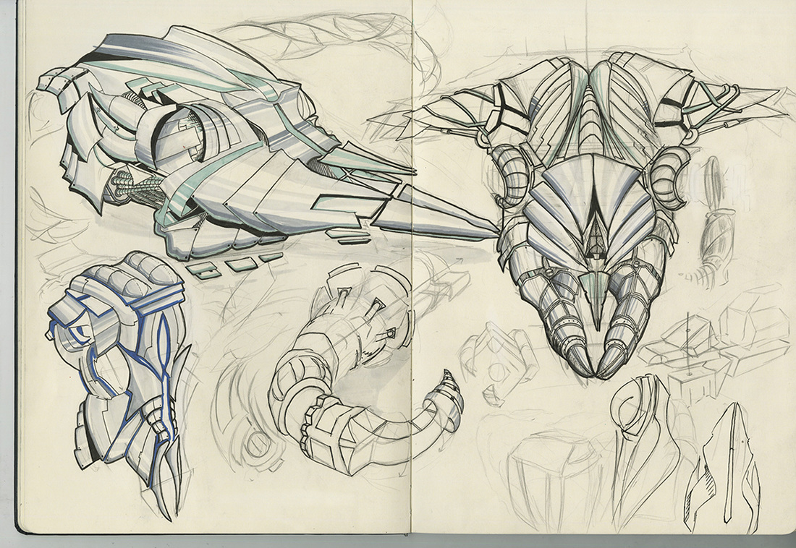
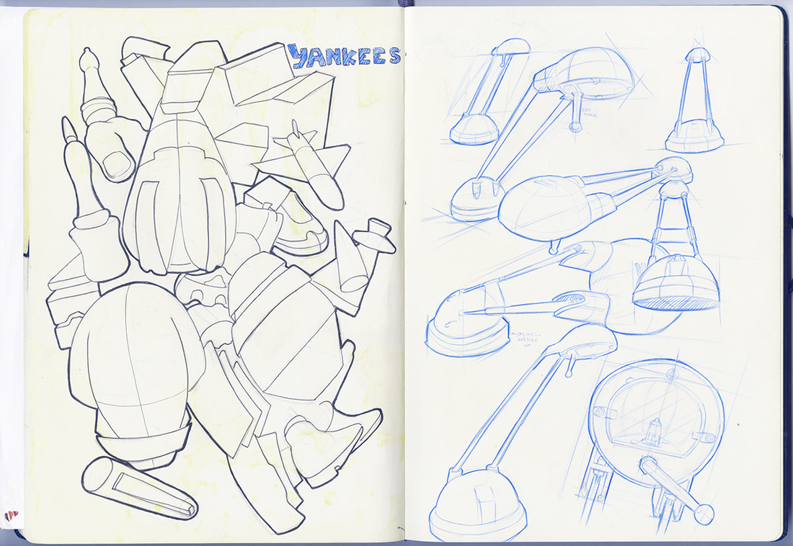
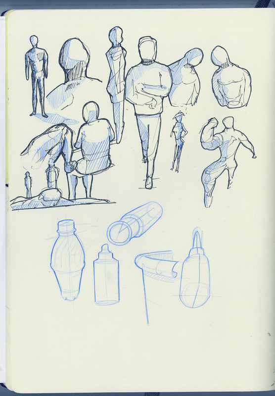
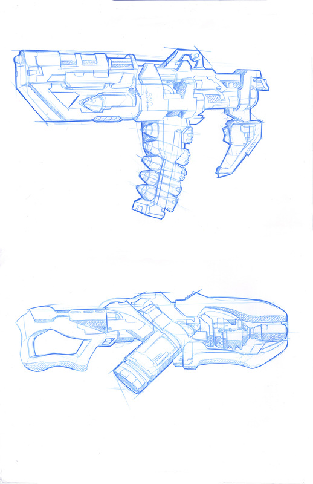
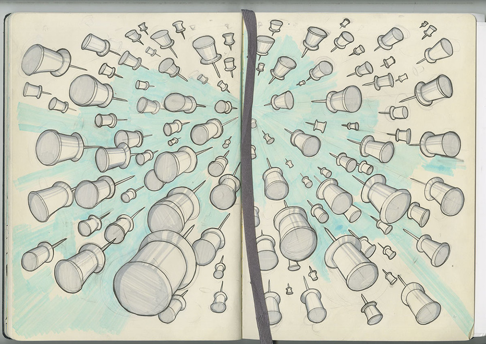
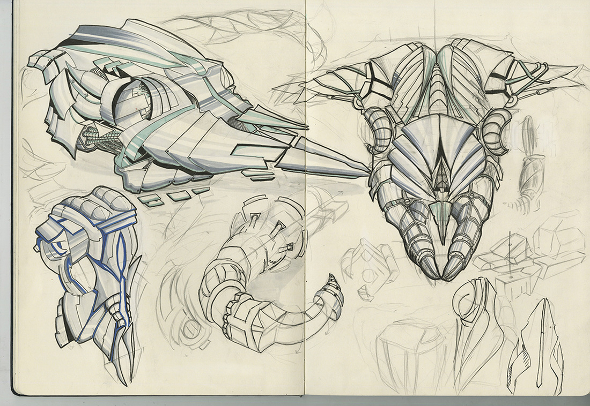
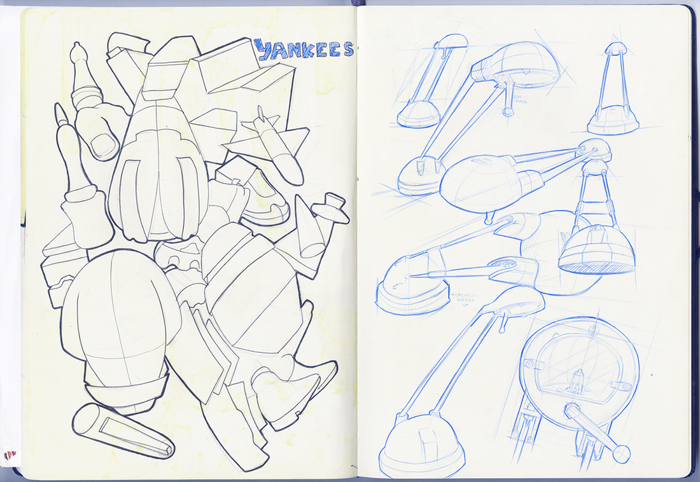
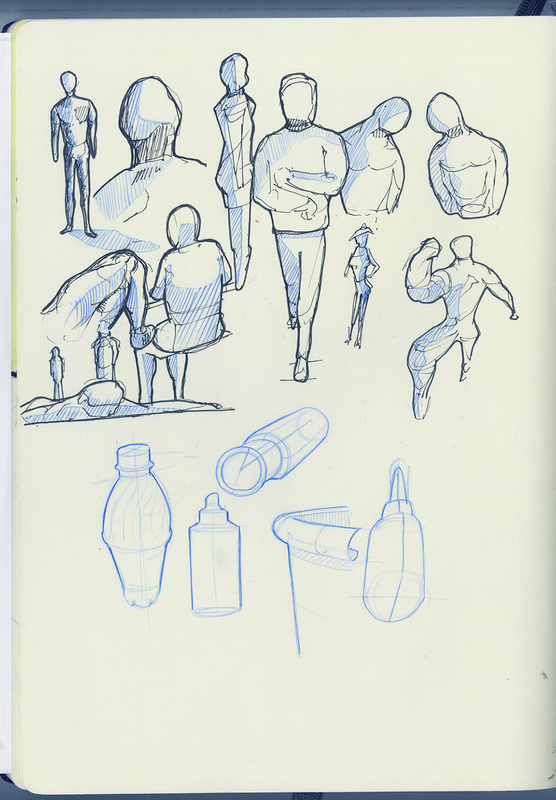
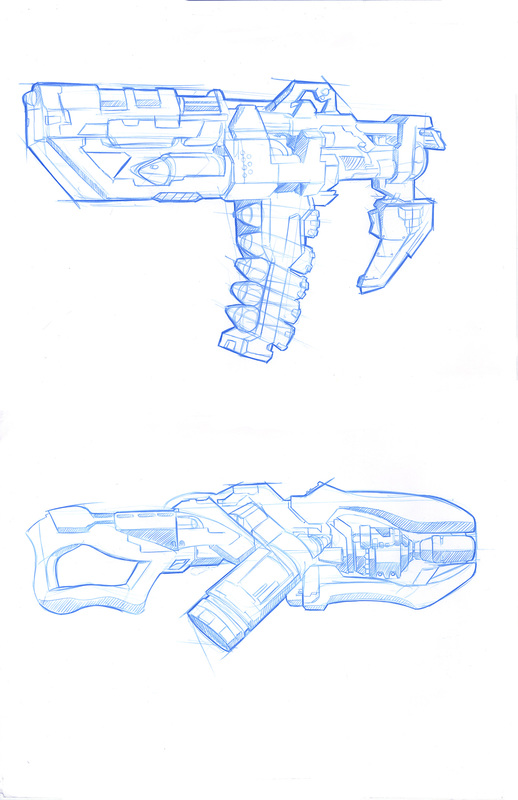
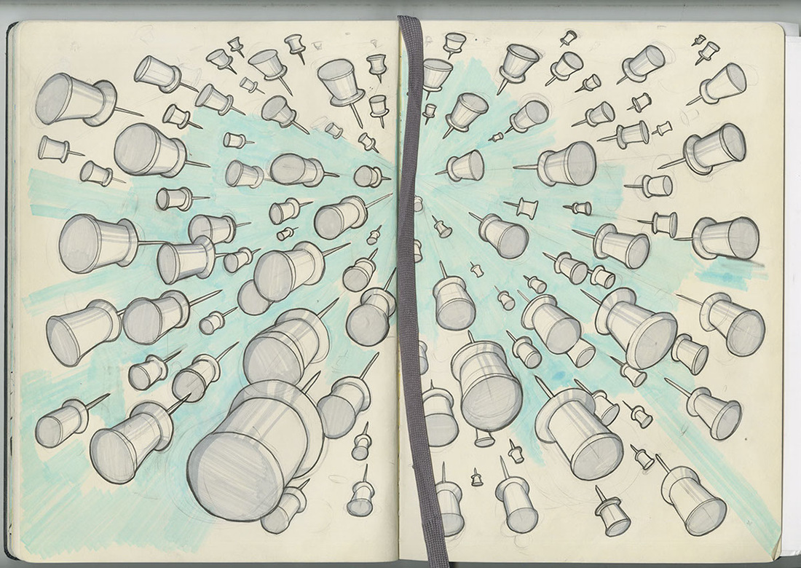

Design
Close Shave Typography
Assigned with the material of a colored pencil, I was tasked to create typeface/alphabet out of it.


Tutsian Defenders
One of the term projects I did last semester included a game! I was always interested in tower defense games(bloons td, master of defense, warcraft 3 mods, orcs and trolls, canyon defense, etc.) and I thought this was my chance to make a game that I would enjoy. The class was teaching fundamentals of programming using Python so I used Python, Pygame and NetworkX to make this game.
Gill Sans Typeface animation
A project for the typography class. I created a short video about Gill Sans using Adobe After Effects.
Apollo 11 Mission Illustration
Our last drawing project for the freshman year was on a totally different medium. After a whole year of sketching in sketchbooks and drawing on 11x17's, we were introduced a new challenge by illustrating an event about the moon on a whiteboard, taking a video of it and voicing over.
Sketching
A great pasttime for me is sketching. I enjoy abstract sketches as well as drawing figures. I always carry a set of pens and my sketchbook with me when traveling.
 








